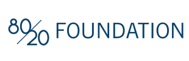
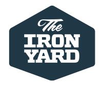
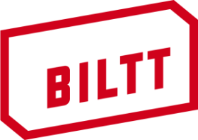

Hello world!
Rails Girls comes to San Antonio! During the free two-day workshop we'll dive into the magical world of Ruby on Rails.
Applications are open until the 17th of January 2016.
This workshop is intended for people new to programming, or new to Ruby on Rails. No prior experience is required. We have room for 35 participants, so get your application in early!
Web developers that want to help coach / teach, please contact us!
You learn designing, prototyping and coding with the help from our coaches.
You need your own laptop, curiosity and a sprinkle of imagination!
Want to help? We are looking for volunteers and Rails coaches.
Email us.
| 18.00 - 21.00 |
Installation partyGet know the attendees a little bit before hand. Bring your laptop if you can, so we can install Ruby on Rails for you. |
|---|
| 9:00 - 10:00 |
Registration, coffee and installation festDuring the morning we’ll install Ruby on Rails on your computer. |
|---|---|
| 10:00 - 10:15 |
WelcomeOutline of the day & word from sponsors |
| 10:20 - 10:45 |
Designing your web app -workshop |
| 10:50 - 11:10 |
Tryruby.orgLet's get coding! |
| 11:10 - 13:00 |
WORKSHOPJumpstart your first web application |
| 13:00 - 13:30 | Lunch |
| 13.30- 13:45 |
Bentobox - Understanding Web AppsRecap of what we’ve learned and how it all fits together. |
| 13:45 - 14:30 |
Lightning talks from coaches |
| 14:30 - 16:30 |
WORKSHOPExtend your application. |
| 20:00 - |
AfterpartyOpen for everyone, meet cool people interested in tech. |
Applications close: January 10th
Acceptances informed:January 18th
Rails Girls San Antonio is co-organized with our awesome partners.
Want to help? We're looking for partners & sponsors for the non-profit event! Email us!
Geekdom is a new kind of collaborative coworking space where Entrepreneurs, Technologists, Developers,
Makers & Creatives help each other build businesses & other cool things together.

80/20 Foundation strives to transform san antonio by issuing grants to public charities in three strategic areas:
STEM education, entrepreneurial ecosystem and urban options.

Iron Yard offers learning programs that cover the core components of web development. Each course is designed
to help people reach their learning and career goals.
Huboard is an instant project management for your GitHub issues

Biltt is a product, interface and experience design shop that loves working with startup companies.

Codeup's full-stack and front-end courses prepare junior developers for successful careers in tech.
Turner Logic is offering tech consulting, software development, hardware prototyping, and training services.
How much does the workshop cost? Nothing, it's free! You just need to be excited!
Who is this aimed for? Women of any age with basic knowledge of working with a computer. We’ve had people of all ages taking part. Please bring your laptop.
Can men attend? Yes, but you need to be accompanied by an interested lady. Also, girls are given a priority.
I know how to program - How can I help? We’re also looking for people to be coaches. We’ll have a short meeting before workshop to go through the curriculum. Email us